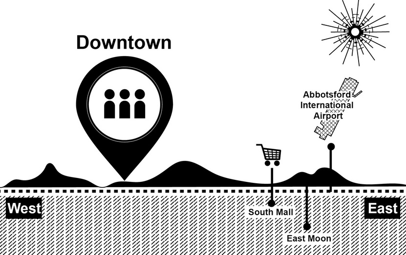
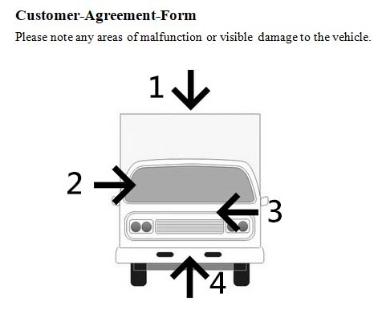

Questions 1 through 3 refer to the following conversation: 00:00 00:00 00:56 |
| Woman: Thanks, guys. If that's everything for you today, I'll just leave your bill on the table and come back in a few minutes. Man: Thanks! So, Ruby, how much should we leave? Woman2: I think ten percent would be fair. Man: Maybe ten years ago. I think the new standard is fifteen percent. Woman2: Fifteen percent for an undercooked steak and cold potatoes? Man: It was probably the kitchen's fault. There's no need to take it out on our server. Woman2: Well, if you want to leave more that's up to you. Man: Sure. I'm going to leave 15 percent then. Woman: Excuse me. I'm sorry to interrupt. I couldn't help but overhear part of your conversation as I was cleaning the table behind you. There's actually a 15 percent service charge added to the bill already, so you don't need to tip further unless you want to. 女：謝謝你們大家。假如這是你們今天點的，我就將帳單放在桌子上，過幾分鐘再回來。 男： 謝謝！那Ruby，我們該給多少小費？ 女2： 我覺得一成小費算合理。 男： 或許十年前是。我想新的小費標準是一成五。 女2： 一塊不夠熟的牛排與冷掉的馬鈴薯值一成五小費？ 男： 那大概是廚房的錯。沒有必要算在我們的服務生頭上。 女2： 好吧，如果你想多給一些也是你的自由。 男： 好的，那我會留一成五。 女： 不好意思。我很抱歉打斷你。我在整理後面的桌子時不小心聽到你們的部分對話。帳單上已經加了一成五的服務費，所以除非你們要，不然就不需要再多給小費了。 重要單字及片語 settle v. 支付；結算 leave v. 留下 standard n. 水準 undercooked adj. 尚未煮熟的 stingy adj. 吝嗇的；小氣的 refund v. 退還；退款 displeased adj. 不開心的 compromising adj. 讓步的 combative adj. 好鬥的 devastated adj. 身心交瘁的 relieved adj. 放心的 take it out on sb. 向某人出氣 ex. Alice was mad because she couldn't find her scissors, and then took it out on her little sister. 愛麗絲找不到她的剪刀就拿她妹妹出氣。 hurry up 快一點 ex. Hurry up! Your school bus is driving away now. 快一點!你的校車要開走了。 |
Questions 4 through 6 refer to the following conversation: 00:00 00:00 00:43 |
| Man: I'm sorry, madam, but we really don't have any record of your reservation. Woman: But I reserved three weeks ago! You can't turn me away; I have a party of fifteen people coming. Man: I really am sorry, but we can't possibly fit that many in at such short notice. Woman: Well then, I would like to take this up with your manager if you'll let me. I would like for him to explain to my colleagues why we won't be dining here this evening. Man: I'll just go and see if he's available. Please have a seat. Woman: I think I'd prefer to stand. Find him quickly, please. 男： 抱歉，這位女士，可是我們真的沒有任何妳有預約的紀錄。 女： 可是我三個禮拜前就訂了！你不能這樣打發我走；我有十五個人要來參加派對。 男： 我真的很抱歉，可是我們不可能在這麼短的時間內容納下這麼多人。 女： 既然這樣，如果你不反對我要把這件事告訴你們經理。我要他跟我的同事解釋為什麼我們今晚不能在這裡用餐。 男： 我去看看他是不是有空。請坐。 女： 我想我寧可站著。快點去找他，麻煩你。 重要單字及片語 reservation n. 預約 reserve v. 預約 available adj. 有空的 lunchtime n. 午餐時間 occasion n. 場合 turn away 不理；拒絕；趕走 ex. Our government turned the refugees away without providing them with any assistance. 我們的政府沒有提供任何援助就難民趕走。 fit in 容納 ex. This stateroom can fit five adults and two children. 這個包廂可以容納五個成人和兩個小孩。 at least 至少 ex. We need at least three people to work the night shift. 我們需要至少三個人來上晚班。 split up分離 ex. The class will be split into small groups for the math exercise. 該班級將被分成若干小組進行數學練習。 |
Questions 7 through 9 refer to the following conversation: 00:00 00:00 00:37 |
| Man: Professor Garcia, do you have a moment? Woman: Sure Carl, what can I do for you? Man: I was wondering if I could have a few more days to work on the term paper. Woman: We have already discussed the policy about that. Man: I know but I've been so busy with work. Woman: Although I sympathize with your situation, I can't make exceptions. You still have a few more days to get it done. Man: I realize that. All I need is an extra day or two. Woman: Perhaps you should request some time off. You need to learn how to manage your time effectively. 男： Garcia教授，您有空嗎？ 女： 當然Carl，我能為你做什麼嗎？ 男： 我想知道我是不是能夠有多幾天的時間來做期末報告。 女： 我們已經討論過關於那件事了。 男： 我知道，可是我一直很忙著工作。 女： 雖然我同情你的處境，可是我不能破例。你還有幾天的時間完成報告。 男： 我了解這點。我需要的只是多個一天或兩天。 女： 或許你應該請幾天假。你需要學習如何有效的管理時間。 重要單字及片語 professor n. 教授 wonder v. 納悶；想知道 term n. 學期 sympathize v.同情 policy n. 原則 effectively adv. 有效率地 make exceptions 破例 ex. We cannot make exceptions for anyone. 我們不能為任何人破例。 |
Questions 10 through 12 refer to the following conversation: 00:00 00:00 00:38 |
| Woman: I'm sorry, Mr. Darvill. We put out the final boarding call ten minutes ago. The gate has closed already. Man: I know. I'm sorry, but I really need to get on this plane. I don't want to miss the birth of my first child. Woman: I really am very sorry, sir, but there's nothing I can do. Once the gate is closed we can't let any more passengers on board. Man: Has the plane left yet? Woman: No, the cabin crew are still preparing for takeoff. Man: Have the doors been closed? Woman: I don't think so, sir. Man: Then why can't you let me on? Woman: Okay, let me speak to the head stewardess. Wait a moment please. 女： 我很抱歉，Darvill先生。我們十分鐘前就發了最後登機廣播。登機門已經關了。 男： 我知道。我很抱歉，可是我真的得搭上這班飛機。我不想錯過我的第一個孩子的出生。 女： 我真的非常遺憾，先生，可是我無能為力。一旦登機門關上後我們就無法再讓任何乘客上飛機了。 男： 飛機已經離開了嗎？ 女： 還沒，機艙組員還在準備起飛。 男： 機門已經關了嗎？ 女： 我想還沒，先生。 男： 那為什麼你不能讓我登機？ 女： 好吧，讓我跟座艙長說說看。請稍等一下。 重要單字及片語 boarding n. 登機 gate n. 登機門 once conj. 一旦 takeoff n. 起飛 stewardess n. 客機女服務員 put out 發佈；撲滅 ex. Fortunately, they discovered the fire quickly and put out it at once. 幸好他們很快就發現失火了並且馬上把火撲滅。 on board 上船；上車；上飛機 ex. The captain always goes on board first to start the engine. 機長總是首位登上飛機去發動引擎。 cabin crew 航班空服員 ex. All cabin crew members must undergo a three-month training course in Atlanta. 所有飛機空服員都必須去亞特蘭大受訓三個月。 |
Questions 13 through 15 refer to the following conversation: 00:00 00:00 00:33 |
| Man: Sandra, did you get the email about the event this Friday night? Woman: No, I don't have my email address set up yet. What is it? Man: The boss is taking us out to dinner to celebrate last year's sales figures being our highest ever. I know you've only just joined the team, but we'd love to have you come along. It would be a good opportunity for you to get to know everyone. Woman: Yes, you're right. That sounds great. Thanks for the invite! 男：Sandra，你有收到關於這禮拜五晚上的活動的電子郵件嗎？ 女： 沒有。我的電子郵件還沒設定好。怎麼了？ 男： 老闆要邀請我們出去吃晚餐慶祝去年的銷售成績是我們有史以來最高的。我知道妳才剛加入我們團隊，但我們希望你可以一起來。這會是妳認識大家的一個好機會。 女： 是的，你說的對。這聽起來很不錯。謝謝你的邀請！ 重要單字及片語 celebrate v. 慶祝 figure n. 數字；數量 opportunity n. 機會 inexperienced adj. 經驗不足的 invitation n. 邀請 enthusiastically adv. 熱情地 set up 設定 ex. Make sure to set up an account on your computer before using it. 務必要在使用你的電腦前設定一個帳號。 take out 帶某人出去 ex. My father will take us out to dinner this weekend to celebrate our wedding anniversary. 為了慶祝我們的結婚紀念日，這個周末我父親將帶我們出去吃晚餐。 |
Questions 16 through 18 refer to the following conversation: 00:00 00:00 00:48 |
| Woman: What did everyone think of the book? Man: It's clearly a love story, and I've never been too keen on love stories. Woman: A love story? What are you talking about? It's about so much more than that. Man: Like what? Woman: For one thing, the historical backdrop paints a picture of a time when having relationships with people from other cultures was simply not possible. Man: Right, like I said, it's a love story. Woman: You know you're very narrow-minded? Why do you come to this reading group exactly? Is it just to put other people down? Man: Actually, in all honesty, I just come for the free wine and cheese. 女： 那麼，大家對這本書有什麼想法？ 男： 這本書顯然是描寫愛情故事，我從沒喜歡過愛情故事。 女： 愛情故事? 你在說什麼？故事有更深的意涵。 男： 像什麼？ 女： 舉個例子，故事的歷史背景刻畫了一個當與來自於其他文化的人發展戀情是完全不可能的時代。 男： 對，所以就像我說的，它是個愛情故事。 女： 你知道你的想法很偏執嗎？你究竟為何要來參加這個讀書會？純粹只是為了掃別人的興嗎？ 男： 其實，說實話，我純粹是為了免費的紅酒跟起司而來的。 重要單字及片語 historical adj. 歷史的 backdrop n. 背景 relationship n. 戀愛關係 narrow-minded adj. 有偏見的 novel n. 小說 company n. 友情；陪伴 keen on 喜愛；熱衷於 ex. Most vegetarians are keen on eating natural foods without any additives. 大多素食主義者喜歡吃無添加物的天然食品。 put down 羞辱；批評 ex. He didn't mean to put her down. 他不是有意要羞辱她。 in all honesty 誠實地；實在地 ex. In all honesty, he really deserves to be promoted. 老實說，他真的是有資格被升職。 fond of 喜歡 ex. He was especially fond of the blue one. 他特別喜歡藍色的那一個。 |
Questions 19 through 21 refer to the following conversation: 00:00 00:00 00:45 |
| Woman: I'd like four seats on the next train to Springfield. Man: The next train leaves in twenty minutes. However, there's also an express train leaving in thirty-four minutes that will arrive twenty-five minutes earlier. Woman: Are both options the same price? Man: The express train is an extra ten dollars per person. Woman: Are there any discounts for children? Man: Children under three ride for free and children under twelve pay half price. Woman: How much is the adult fare? Man: Forty dollars. Woman: That's the express ticket price? Man: Yes. Woman: Great, I'll take two adult tickets and a children's ticket for the express train. My two year-old doesn't need one, right? Man: Correct. Woman: Great, thanks. 女： 我想要買下一班往Springfield的火車四個座位。 男： 下一班車二十分鐘內就要開了。不過，還有一班三十四分鐘內出發的快車可以早二十五分鐘抵達。 女： 這兩者價錢相同嗎？ 男： 快車每人要加收十美金。 女： 小孩有任何折扣嗎？ 男： 三歲以下的小孩免費搭乘，十二歲以下的小孩付半票。 女： 成人票是多少錢？ 男： 四十美金。 女： 那是快車的票價嗎？ 男： 是的。 女： 好極了，我要買兩張快車的成人票跟一張孩童票。我的兩歲小孩不需要買票，對吧？ 男： 正確。 女： 好極了，謝謝。 重要單字及片語 express n. 快車；快遞 discount n. 折扣 fare n. 票價 steward n. 男服務員 inspector n. 檢查員 vendor n. 小販；叫賣者 objective n. 目的 pay for為…付出代價 ex. In the end that dishonest businessman is going to pay for cheating so many people. 最終這個生不誠實的生意人將為他欺騙這麼多人付出代價。 |
Questions 22 through 24 refer to the following conversation: 00:00 00:00 00:50 |
| Man: You know little Jamie Popovici in 7B? Woman: Yes of course I know him. What's he done now? Man: Actually it's me. I've lost the homework he handed in today. Is it in your classroom by any chance? Woman: I did teach 7B this morning, so possibly. Feel free to take a look. Man: I really hope I can find it. The last time I lost a kid's homework I got a very angry phone call from the mother that evening. Woman: I wouldn't worry about it too much. I'm sure our young friend Mr. Popovici didn't spend too much time on it. To be honest I find it amazing that he handed it in at all. Just give him a D and forget about it. 男： 你認識住在7B的小子Jamie Popovici 嗎？ 女： 我當然認識他。他這回做了什麼事？ 男： 其實是我。我把他昨天交給我的作業弄丟了。有沒有可能掉在你的教室裡？ 女： 我今天早上是教7B沒錯，所以有可能。去看看。 男： 但願我真的可以找得到。上次我弄丟一個孩子的作業，當天晚上那孩子的媽很憤怒的打電話過來。 女： 我不會太擔心這個。我相信我們的小朋友Popovici並沒有花太多時間在那上面。說實話，我很驚訝他會交作業。就給他D的成績然後忘了這件事吧。 重要單字及片語 possibly adv. 也許；可能 amazing adj. 令人驚訝的 consequence n. 後果 favourite adj. 特別喜愛的 responsible adj. 認真負責的 hand in 繳交 ex. You have to hand in the application by the end of the month. 你必須要在月底前交出申請書。 by any chance 意外地；偶然 ex. Did you by any chance see my wallet when you were in the living room? 你在客廳時是否偶然看見我的皮夾？ to be honest 說實話；老實說 ex. To be honest, most people don't trust the government's new national health insurance policy. 老實說，大多人不信任政府對全民健保的新政策。 in question 正討論的 ex. The client didn't accept the proposal in question. 委託人不接受正在討論的這個提案。 |
Questions 25 through 27 refer to the following conversation:  00:00 00:00 00:52 |
| Man: Does this tea set come in any other colors? Woman: Yes, it also comes in navy blue and soft pink, but unfortunately those are out of stock right now here at the airport branch. Man: Will you be getting those in anytime soon? Woman: I have no way of knowing. The supplier just sends us what they have. One of our other locations in the city might have them, though. Would you like me to call for you? Man: Sure. What are the other locations? Woman: The closest to here is South Mall or East Moon. Man: I actually don't live around here. Is there anything downtown? Woman: Yes, on Hampton Street. Are you interested in the navy blue or the soft pink? Man: Either one. I'd like to have a look at them first. 男: 這套茶具有別的顏色嗎? 女: 有，它也有海軍藍和嫩粉色，但可惜現在這些在我們機場分店這缺貨。 男: 你會很快拿到這些嗎？ 女: 我沒辦法知道，供應商只給我們它們有的。不過我們另一家城裡的地點可能會有，你要我打電話給他們嗎？ 男: 好的。其他地點是什麼？ 女: 離這最近的是南方商城和東月。 男: 我其實不住這一帶。市中心有嗎？ 女: 有，在漢普敦街。你想要海軍藍還是嫩粉色？ 男: 任何一個。我想先看看他們。 |
Questions 28 through 30 refer to the following conversation: 00:00 00:00 00:30 |
| Man: My boss gave me two free tickets to a concert tonight. Do you want to go with me? Woman: Maybe. Is the band good? Man: Actually it's not a band. It's classical. Woman: I thought I told you before, I don't like classical. Man: I don't remember you ever saying that. Woman: I definitely did. I'm sure I told you. Why don't you ever listen to me? Man: Because you always talk about the same things, so sometimes I just get bored and stop listening. Woman: Whatever. Go by yourself. 男： 老闆給我兩張今晚音樂會的免費門票。妳想跟我一起去嗎？ 女： 也許吧。這個樂團很棒嗎？ 男： 其實那不是一個流行樂團。是古典音樂。 女： 我記得我以前跟你說過，我不喜歡古典音樂。 男： 我不記得你曾說過這樣的話。 女： 我肯定有。我確定我告訴過你。你為什麼從來都沒有把我的話聽進去？ 男： 因為妳總是老調重彈，所以有時候我覺得很無聊就乾脆不聽。 女： 隨你便。你自己去。 重要單字及片語 free adj. 免費的 concert n.演唱會 band n. 樂團 classical adj. 古典的 definitely adv. 肯定地 poetry n. 詩 upset adj. 沮喪；不高興 disturb v. 打擾；擾亂 listen to 注意聽；聽從 ex. As a patient you should listen to the doctor's suggestion. 身為病人的你應該聽從醫生的建議。 made plans for 擬定…計畫 ex. We only have a few days to make plans for this journey. 我們只有幾天的時間來為這次的旅遊擬訂計畫。 |
Questions 31 through 33 refer to the following conversation:
00:00 00:00 00:56 |
|
| Man: Have we applied for the import license for IP3 recording devices yet? Woman: We've applied, but we haven't heard back from them yet. Man: Seems like it's been a while. Woman: Actually, it's normal for them to take anywhere from four to eight weeks to reply. Man: Is there any way you could expedite the process? Woman: I'm afraid not. Continually asking them to speed it up could have the opposite effect. We might annoy them and they will take even longer. Man: Could we assume that our application will be accepted, and begin to prepare our shipment so it can be sent as soon as we get word about the application? Woman: Over 90% of our similar applications have been accepted. Still, I can't guarantee there won't be any unforeseen problems. It's your call in the end. 男：我們申請IP3錄音設備的進口許可證了嗎？ 女：已經申請了，但我們還沒有收到他們的回音。 男：好像已經有一段時間了。 女：其實，對他們來說四到八週的答覆期是正常的。 男：你有辦法加速這個過程嗎？ 女：恐怕不行。不斷地要求他們加快可能會產生相反的效果。我們可能會惹惱他們而拖更久。 男：我們能不能先假設我們的申請能通過，並開始準備裝運貨物，等一收到消息即可盡快寄出？ 女：我們超過90％以上的類似申請已通過。不過，我不能保證不會有任何不可預見的問題。最後還是由你決定。
|
Questions 34 through 36 refer to the following conversation: 00:00 00:00 00:46 |
| Man: Hello. Is this the front desk? Woman: Yes, it is. What can I help you with, sir? Man: I've just checked into my room and it appears the room hasn't been cleaned after the previous guests. Woman: Really? Can you describe exactly what the problem is? Man: The bed sheets clearly haven't been changed, there are wet towels hanging all around the bathroom, and I shall spare you the details of what I found in the bin. Needless to say, I'm a little dissatisfied. Woman: I'm sorry, sir. Would you like me to come up and take a look? Man: Are you a cleaner? Woman: No, sir. Man: Well then I don't need you. I need a cleaner to come and sort this mess out! 男：你好。這裡是櫃檯嗎？ 女： 是，沒錯。有什麼我可以為您效勞的嗎？ 男： 是這樣的，我剛住進我的房間，看起來好像前面的客人離開後房間還沒有打掃過。 女：真的嗎？你能確切描述問題嗎？ 男： 床單顯然還沒更換，濕毛巾掛滿整個浴室，還有我實在不想跟你說我在垃圾桶裡發現什麼。想當然爾，我不太滿意。 女： 我很抱歉，先生。你要我上來查看一下嗎？ 男： 你是清潔人員嗎？ 女： 不是的，先生。 男： 那我不需要你。我需要的是一個清潔人員到這裡來收拾殘局！ 重要單字及片語 appear v. 似乎；看起來好像 previous adj. 之前的 describe v. 描述 sheet n. 床單 clearly adv. 明顯地 spare v. 略去；省掉 bin n. 垃圾桶 dissatisfied adj. 不滿的 mess n. 混亂 decorator n. 裝潢師 receptionist n. 接待員 refund n. 退款 equipment n. 設備 needless to say 不言而喻；不用說 ex. Needless to say, he broke his promise again. 不用說，他又食言了。 sort out 整理某事物；解決問題 ex. You need to hire a professional to sort out your financial situation. 你需要雇用專業人士來解決你經濟上的問題。 |
Questions 37 through 39 refer to the following conversation:  00:00 00:00 00:50 |
| Woman: So the total fee comes to 359.60. Shall I charge that to the credit card that you used to pay the deposit? Man: Can I see the bill for a moment? Woman: Sure, here you go. Man: What is this $60 charge at the bottom? Woman: That's for the scratches that we found on the bumper and right side door. Man: I think those were already there when we picked up the van. Woman: Actually, we did a full inspection with your wife at the time of initial rental. As you can see on this rental agreement, there was no record of any scratches made, and your wife signed at the bottom. Man: OK, OK. Sure, you can charge the card. 女：所以總費用是359.60。我要用您付訂金的信用卡來收費嗎？ 男：我可以看一下賬單嗎？ 女：當然，在這裡。 男：最底部標記$60的收費是哪一筆？ 女：我們在保險槓和右側車門發現刮痕。 男：我們領車時，那些刮痕就已經在那了。 女：事實上，我們與你的妻子在租賃時做了一個全面檢查。正如你可以在此租賃協議看到的，沒有任何刮痕的記錄，還有你的妻子在底部的簽名。 男：OK，OK。好的，你可以用這張卡計費。 |